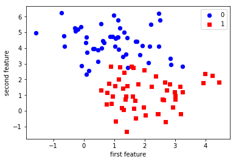
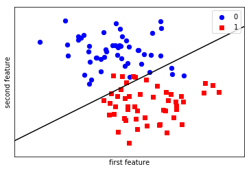
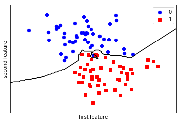

scikit-笔记04:监督学习之分类问题
Table of Contents
- 1. Supervised Learning Part 1 – Classification
- 1.1. preprocessing: generate, plot, split
- 1.2. The scikit-learn estimator API
- 1.2.1. instantiate the estimator object.
- 1.2.2. build the model by
estimator.fit(train_data, train_label) - 1.2.3. using model to predict test_data by
estimator.predict(test_data) - 1.2.4. compare the standard label and predict label by
estimator.score(test_data,test_label) - 1.2.5. method-1 : by
np.mean - 1.2.6. method-2 : by
estimator.score(test_data,test_label) - 1.2.7. draw this estimator as line by
plt.figures.plot(estimator,ALL_datasets) - 1.2.8. get the parameters of this estimator by
estimator.<attr>_
- 1.3. Another classifier: K Nearest Neighbors
- 2. Exercise
- 3. Misc tools
%matplotlib inline import matplotlib.pyplot as plt import numpy as np
1 Supervised Learning Part 1 – Classification
To visualize the workings of machine learning algorithms, it is often helpful to study two-dimensional or one-dimensional data, that is data with only one or two features. While in practice, datasets usually have many more features, it is hard to plot high-dimensional data in on two-dimensional screens.
We will illustrate some very simple examples before we move on to more "real world" data sets.
1.1 preprocessing: generate, plot, split
1.1.1 generate two-kind-labeled-data points by make_blobs
First, we will look at a two class classification problem in two dimensions. We use the synthetic data generated by the make_blobs function.
# definition of make_blobs: produce multiple gaussians sklearn.datasets.make_blobs(n_samples=100, n_features=2, centers=3, cluster_std=1.0, center_box=(-10.0, 10.0), shuffle=True, random_state=None)
from sklearn.datasets import make_blobs X, y = make_blobs(centers=2, random_state=0) print('X ~ n_samples x n_features:', X.shape) print('y ~ n_samples:', y.shape) print('\nFirst 5 samples:\n', X[:5, :]) print('\nFirst 5 labels:', y[:5])
1.1.2 plotting
As the data is two-dimensional, we can plot each sample as a point in a two-dimensional coordinate system, with the first feature being the x-axis and the second feature being the y-axis.
import matplotlib.pyplot as plt import numpy as np # give different color to data with different label plt.scatter(X[y == 0, 0], X[y == 0, 1], c='blue', s=40, label='0') plt.scatter(X[y == 1, 0], X[y == 1, 1], c='red', s=40, label='1', marker='s') plt.xlabel('first feature') plt.ylabel('second feature') plt.legend(loc='upper right')
<matplotlib.legend.Legend at 0x7f9c530a16d8>

1.1.3 split datasets to: training and testing
Classification is a supervised task, and since we are interested in its performance on unseen data, we split our data into two parts:
- a training set that the learning algorithm uses to fit the model
- a test set to evaluate the generalization performance of the model
The train_test_split function from the model_selection module does that for us
– we will use it to split a dataset into 75% training data and 25% test data.

from sklearn.model_selection import train_test_split X_train, X_test, y_train, y_test = train_test_split(X, y, test_size=0.25, random_state=1234, stratify=y) # stratify : array-like or None (default is None) # If not None, data is split in a stratified fashion, using this as the class labels.
1.2 The scikit-learn estimator API
Every algorithm is exposed in scikit-learn via an Estimator object. (All
models in scikit-learn have a very consistent interface). For instance, we first
import the logistic regression class.
1.2.1 instantiate the estimator object.
Estimator is an ML algorithm, like linear/logistic regression, SVM etc.
from sklearn.linear_model import LogisticRegression
classifier = LogisticRegression()
X_train.shape
y_train.shape
(75,)
1.2.2 build the model by estimator.fit(train_data, train_label)
estimator.fit(train_data, train_label) will print the initial parameters of this model.
| parameters | description |
|---|---|
| C=1.0, | inverse of regularization strength |
| class_weight=None, | the weight of certain label, always used for handling unbalance data |
| dual=False, | |
| fit_intercept=True, | |
| intercept_scaling=1, | |
| max_iter=100, | |
| multi_class='ovr', | |
| n_jobs=1, | number of CPU cores used |
| penalty='l2', | regularization |
| random_state=None, | used to shuffling dataset before predict |
| solver='liblinear', | optimization method, eg: SGD: stochastic gendient descent, etc. |
| tol=0.0001, | tolerance to stop |
| verbose=0, | |
| warm_start=False | can model chained together or not |
To built the model from our data, that is to learn how to classify new points, we call the fit function with the training data, and the corresponding training labels (the desired output for the training data point):
classifier.fit(X_train, y_train)
LogisticRegression(C=1.0, class_weight=None, dual=False, fit_intercept=True, intercept_scaling=1, max_iter=100, multi_class='ovr', n_jobs=1, penalty='l2', random_state=None, solver='liblinear', tol=0.0001, verbose=0, warm_start=False)
(Some estimator methods such as fit return self by default. Thus, after
executing the code snippet above, you will see the default parameters of this
particular instance of LogisticRegression. Another way of retrieving the
estimator's ininitialization parameters is to execute classifier.get_params(),
which returns a parameter dictionary.)
1.2.3 using model to predict test_data by estimator.predict(test_data)
estimator.predict(test_data) will return the predict_test_label as ndarray.
We can then apply the model to unseen data and use the model to predict the estimated outcome using the predict method:
prediction = classifier.predict(X_test)
prediction
array([1, 0, 1, 0, 1, 1, 1, 1, 1, 1, 1, 0, 0, 0, 0, 1, 0, 0, 1, 0, 0, 0, 1, 1, 0])
1.2.4 compare the standard label and predict label by estimator.score(test_data,test_label)
1.2.5 method-1 : by np.mean
We can compare these against the true labels:
print(prediction) print(y_test)
We can evaluate our classifier quantitatively by measuring what fraction of predictions is correct. This is called accuracy:
np.mean(prediction == y_test) # <- classical usage of mean, keep in mind
0.83999999999999997
1.2.6 method-2 : by estimator.score(test_data,test_label)
There is also a convenience function , score, that all scikit-learn classifiers have to compute this directly from the test data:
classifier.score(X_test, y_test)
0.83999999999999997
It is often helpful to compare the generalization performance (on the test set) to the performance on the training set:
classifier.score(X_train, y_train)
0.94666666666666666
1.2.7 draw this estimator as line by plt.figures.plot(estimator,ALL_datasets)
LogisticRegression is a so-called linear model, that means it will create a decision that is linear in the input space. In 2d, this simply means it finds a line to separate the blue from the red:
plot_2d_separator is a method defined in ./figures/plot_2d_separator.py
from figures import plot_2d_separator plt.scatter(X[y == 0, 0], X[y == 0, 1], c='blue', s=40, label='0') plt.scatter(X[y == 1, 0], X[y == 1, 1], c='red', s=40, label='1', marker='s') plt.xlabel("first feature") plt.ylabel("second feature") plot_2d_separator(classifier, X) plt.legend(loc='upper right');

1.2.8 get the parameters of this estimator by estimator.<attr>_
Estimated parameters: All the estimated model parameters are attributes of the estimator object ending by an underscore. Here, these are the coefficients and the offset of the line:
print(classifier.coef_) print(classifier.intercept_)
1.3 Another classifier: K Nearest Neighbors
Another popular and easy to understand classifier is K nearest neighbors (kNN). It has one of the simplest learning strategies:
given a new, unknown observation, look up in your reference database which ones have the closest features and assign the predominant class.
The interface is exactly the same as for LogisticRegression above.
from sklearn.neighbors import KNeighborsClassifier
This time we set a parameter of the KNeighborsClassifier to tell it we only want to look at one nearest neighbor:
knn = KNeighborsClassifier(n_neighbors=1)
We fit the model with out training data
knn.fit(X_train, y_train) plt.scatter(X[y == 0, 0], X[y == 0, 1], c='blue', s=40, label='0') plt.scatter(X[y == 1, 0], X[y == 1, 1], c='red', s=40, label='1', marker='s') plt.xlabel("first feature") plt.ylabel("second feature") plot_2d_separator(knn, X) plt.legend(loc='upper right'); knn.score(X_test, y_test)
1.0

2 Exercise
EXERCISE: Apply the KNeighborsClassifier to the ``iris`` dataset. Play with different values of the ``n_neighbors`` and observe how training and test score change.
import sklearn.datasets
3 Misc tools
3.1 Scikit-learn
3.1.1 sklearn.datasets.make_blobs
Generate isotropic Gaussian blobs for clustering.
n_samples : int, optional (default=100) The total number of points equally divided among clusters.
n_features : int, optional (default=2) The number of features for each sample.
centers : int or array of shape [n_centers, n_features], optional (default=3) The number of centers to generate, or the fixed center locations.
cluster_std : float or sequence of floats, optional (default=1.0) The standard deviation of the clusters.
center_box : pair of floats (min, max), optional (default=(-10.0, 10.0)) The bounding box for each cluster center when centers are generated at random.
shuffle : boolean, optional (default=True) Shuffle the samples.
random_state : int, RandomState instance or None, optional (default=None)
sklearn.datasets.make_blobs(n_samples=100, n_features=2, centers=3, cluster_std=1.0, center_box=(-10.0, 10.0), shuffle=True, random_state=None)
3.1.2 ML models by now
- from sklearn.neighbors import KNeighborsClassifier
- from sklearn.datasets import make_blobs
- from sklearn.model_selection import train_test_split
- from sklearn.linear_model import LogisticRegression
3.2 Techs
3.2.1 do filtering by making a mask by other array
. | | X_col0 | X_col1 | | | X_col1 | . |--------
--------------------–—| |---–—+-------–—| . | X_row0 | 4.21850347 | 2.23419161 | . | X_row1 | 0.90779887 | 0.45984362 | X[ mask, 1] . | X_row2 | -0.27652528 | 5.08127768 | keep thetrue rowandcol 1| X_row2 | 5.08127768 | . | X_row3 | 0.08848433 | 2.32299086 | ^ | X_row3 | 2.32299086 | . | X_row4 | 3.24329731 | 1.21460627 | | . | .--------. | . mask = boolean of array . | y | | y | . |—| |—| . | 1 | | F | . | 1 | y == 0 | F | . | 0 | -------------------------–—> | T | . | 0 | | T | . | 1 | | F |
from sklearn.datasets import make_blobs import matplotlib.pyplot as plt import numpy as np X, y = make_blobs(centers=2, random_state=0) print('X ~ n_samples x n_features:', X.shape) print('y ~ n_samples:', y.shape) print('\nFirst 5 samples:\n', X[:5, :]) print('\nFirst 5 labels:', y[:5]) plt.scatter(X[y == 0, 0], X[y == 0, 1], c='blue', s=40, label='0') plt.scatter(X[y == 1, 0], X[y == 1, 1], c='red', s=40, label='1', marker='s') plt.xlabel('first feature') plt.ylabel('second feature') plt.legend(loc='upper right')
3.2.2 common steps to generate data points and plot
3.2.3 method-1: by dataframe and groupby
. sklearn.datasets np pd pd .
make_blobs-----–—> ndarray ----–—> dict -----–—> dataframe ----–—> groupby . and color dict. for i,j in groupOfDf: plot (df,color=color_dict[i])
from sklearn.datasets.samples_generator import make_blobs from matplotlib import pyplot from pandas import DataFrame # generate 2d classification dataset X, y = make_blobs(n_samples=100, centers=3, n_features=2) # scatter plot, dots colored by class value df = DataFrame(dict(x=X[:,0], y=X[:,1], label=y)) colors = {0:'red', 1:'blue', 2:'green'} fig, ax = pyplot.subplots() grouped = df.groupby('label') for key, group in grouped: group.plot(ax=ax, kind='scatter', x='x', y='y', label=key, color=colors[key]) pyplot.show()
3.2.4 method-2: by ndarray and mask
import matplotlib.pyplot as plt import numpy as np # give different color to data with different label plt.scatter(X[y == 0, 0], X[y == 0, 1], c='blue', s=40, label='0') plt.scatter(X[y == 1, 0], X[y == 1, 1], c='red', s=40, label='1', marker='s') plt.xlabel('first feature') plt.ylabel('second feature') plt.legend(loc='upper right')